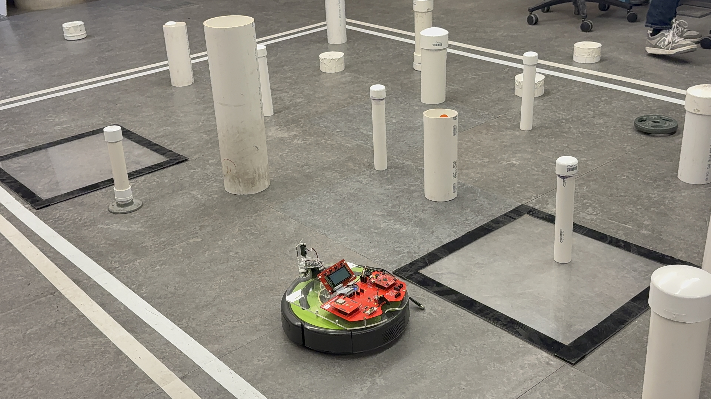

Computer Engineer and Web Developer
Welcome to SE/COMS 3190!
I'm Nakshatra Gupta, a Computer Engineering student at Iowa State University who transferred from Nirma University in Ahmedabad, India. My academic journey has taken me across continents and two universities, building a foundation in both the theoretical depth of computer science and the hands-on rigor of engineering.
I'm most energized when I get to work close to the hardware, programming microcontrollers, designing sensor-driven systems, and watching logic translate into physical behavior. At the same time, I have a strong pull toward the visual side of computing: UI/UX design, digital art, and game design concepts.
Outside of coursework, I've volunteered at Comic Con India and concert events, competed in hackathons, and contributed to NASA's SpaceApps challenge. I believe good engineering is both technically sound and human-centered.
Jan 2026 – May 2026 · Associated with Iowa State University - College of Engineering
Calmify is a full-stack mental health platform that connects users with counsellors through a native Android application. Built collaboratively as a 4-person team for COMS 3090 at Iowa State University.
Key features:
My contributions as the frontend Android developer:
Tech stack: Java, Android SDK, Spring Boot, MySQL, WebSockets, Volley, Glide, Material Design Components, GitLab CI/CD
Skills: Android Development, Java, and +7 skills

Nov 2025 – Dec 2025 · Iowa State University
What is the project?
The CyBot Shopping Robot is an autonomous navigating robot built on the Tiva
TM4C123 microcontroller platform as part of my Embedded Systems coursework at
Iowa State University. The robot was designed to navigate a simulated store
environment, finding aisles, detecting objects on shelves, and reporting its
findings in real time.
What was the goal?
The goal was to program a physical robot to move intelligently through a
structured space without human guidance. Using infrared (IR) sensors to
detect nearby objects and an ultrasonic sensor to measure distance more
precisely, CyBot needed to autonomously identify which aisle it was in, scan
for items on shelves, and log everything it found, all while navigating
around obstacles. Think of it as a very early prototype of the kind of
technology a warehouse or retail company might use to take inventory without
sending a human down every aisle.
What was my contribution and what did I learn?
I was responsible for writing the core navigation and sensing logic in C,
running directly on the microcontroller's hardware with no operating system
underneath. I implemented servo motor control to steer the robot, configured
UART communication so the robot could send real-time data logs back to a
connected computer, and built the aisle-search object identification
algorithm that let CyBot "decide" what it was seeing based on sensor
readings. This project pushed me to think at the hardware level,
understanding how GPIO pins, timers, and PWM signals translate into physical
movement, while also writing clean, modular code to keep the logic
organized.
Why does this matter beyond the classroom?
Autonomous navigation is at the heart of some of today's most exciting
technologies: self-driving cars, warehouse robots at Amazon fulfillment
centers, drones performing agricultural surveys, and hospital robots
delivering supplies. The skills behind CyBot, reading sensor data, making
real-time decisions, and communicating results, are the same skills that make
those systems work. As labor costs rise and supply chains become more
complex, robots that can navigate and sense their environment without
constant human supervision will play an enormous role in how goods are
stored, moved, and sold. This project gave me a concrete, working foundation
in exactly that domain.
Skills: C, Embedded, Robotics
Reach me out at nixngaps@gmail.com!